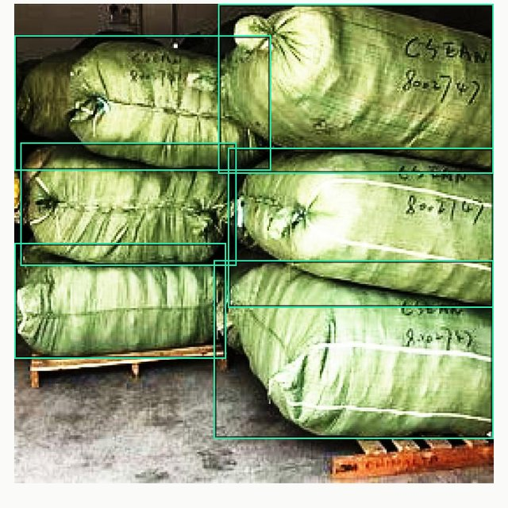
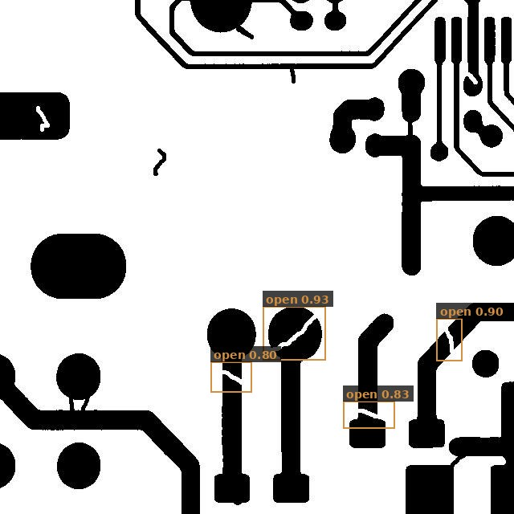

39 datasets. None of them ours.
None of them failed.
Assets first, then damage. Every box is a real detection on a held-out frame.
Pass mark set before we ran: under 55% of a fully-labeled model counts as a failure. Zero of 39 hit it — no per-domain tuning, no architecture changes.



Every percentage is measured against a model trained on that task’s entire labeled dataset — the annotation project you would otherwise be paying for. Forty images gets you most of the way there.
Same 40-image recipe in all three. What changes the score is how big the object is in the frame, not what the camera was bolted to — so tell us the camera and the standoff distance and we will tell you where you will land before you buy.
Finding the asset is the easy half; the value is in the damage — rare, subjective, and expensive for an expert to box. Same recipe, unchanged.



Four industries, one system, nothing rebuilt between them. The cable break at 60% is the weakest and it is here on purpose — thin, low-contrast damage on a busy background is the hardest thing we do, and you should see it before you buy.